L'équipement du cabinet, et les informations pratiques données en consultation, à retrouver ici à tout moment.
De la consultation ORL à l'audiologie et à l'imagerie, le cabinet est équipé pour réaliser sur place la grande majorité des examens et actes de petite chirurgie.
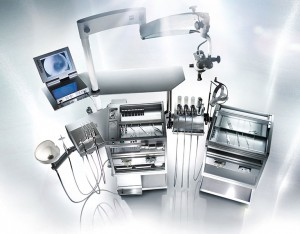
Plus de 25 ans de développement technique et fonctionnel, design optimisé et niveau technique élevé.
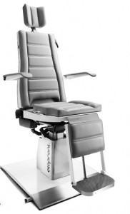
Dispositif ergonomique permettant des positions variées jusqu'à l'horizontale, avec positionnement de Trendelenburg pour les urgences.
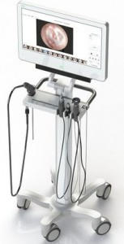
Système mobile intégrant vidéo-endoscope HD, caméra, vidéo-otoscope, lumière LED et enregistrement des examens.
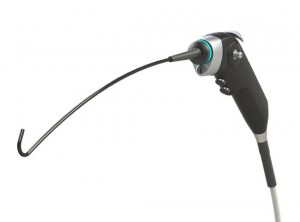
Diamètre de gaine de seulement 3,6 mm, images HD à haut niveau de détail.
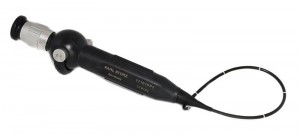
Instrument dédié aux enfants pour des examens délicats réalisés avec douceur.
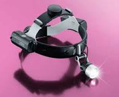
Équipement LED haute intensité permettant une consultation mains libres.
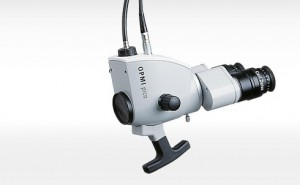
Microscope compact et performant, facilitant un positionnement précis sur l'unité de consultation.
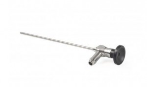
Lentille optique en verre pour l'exploration nasale précise et le suivi post-opératoire.
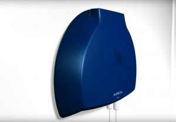
Tests multimodaux en casque ou en champ libre, pour adultes et enfants.
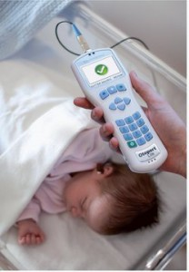
Appareil idéal pour le dépistage de la surdité du nourrisson et de l'enfant.
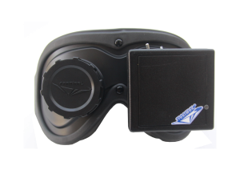
Très léger (255 grammes), sans fil, pratique et fiable, pour étudier les mouvements oculaires.
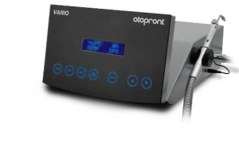
Nettoyage auditif et explorations vestibulaires thermiques calibrées.
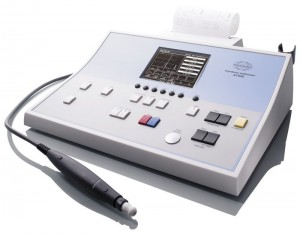
Mesure de la compliance tympanique pour un bilan auditif complet.
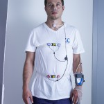
Équipement dédié à l'étude des troubles respiratoires du sommeil.
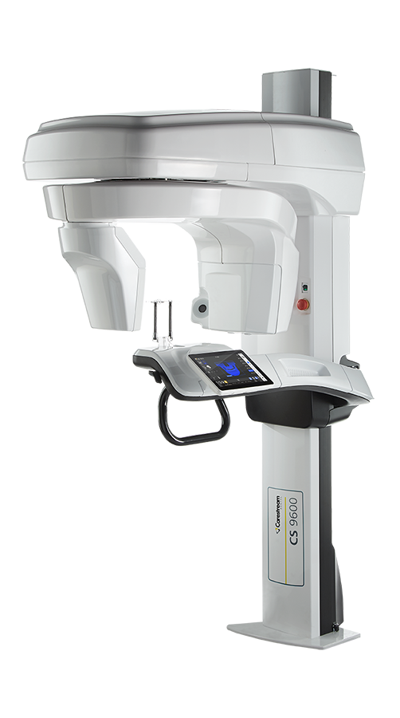
Imagerie multi-fonctionnelle fusionnant technologie panoramique 2D, imagerie CBCT et numérisation faciale 3D.
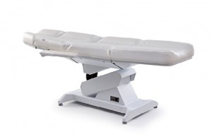
Mobilisation électrique 4 moteurs, matelas épais, accoudoirs mobiles.
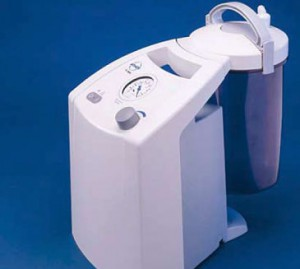
Haute puissance pour interventions nasales, sinusales et oropharyngées.
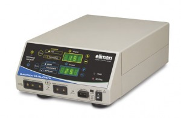
Générateur radiofréquence, plus respectueux du tissu mou que l'électrocoagulation classique.
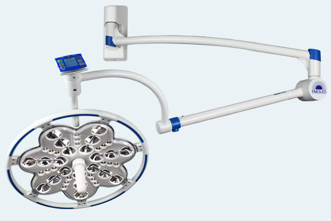
100 000 Lux, réglable en intensité, pour une visibilité chirurgicale optimale.
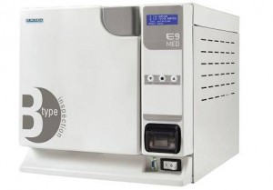
Stérilisation complète de l'instrumentation.
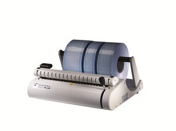
Scellage des sachets stériles.
Le Dr Jacques Majer réalise une feuille de soins électronique, transmise directement à votre caisse d'Assurance Maladie.
Certains rendez-vous ne peuvent pas se réserver en ligne et nécessitent un appel au secrétariat :
Matériel — une seringue de 20 mL (sans aiguille) ou une corne de lavage nasal.
Position — tête penchée en avant, au-dessus d'un lavabo.
Geste — introduire l'embout sans traumatisme, injecter le sérum de façon vigoureuse et continue.
Quantité — environ 3 seringues par fosse nasale, 2 à 3 fois par jour chez l'adulte.
Pour un renouvellement, un avis simple ou un suivi de traitement, une vidéo-consultation est possible sans vous déplacer.
Le Dr Jacques Majer est spécialisé dans l'esthétique du visage et du cou et ne pratique pas de geste au niveau du reste du corps. Ces actes ne sont pas remboursés par l'Assurance Maladie.
L'effet principal consiste à « détendre le muscle dans lequel le produit est injecté ». Résultats visibles dès le cinquième jour, s'intensifiant jusqu'à 15-20 jours, puis stables 3 à 6 mois.
Offre « un effet volumateur, une augmentation de taille d'une région » du visage, visible immédiatement.
Durant environ 4 heures après une injection, il est recommandé d'éviter :
Ne massez pas les points d'injection pendant les 24 heures suivant la séance.
Le polygraphe vous est remis directement au cabinet, avec des explications détaillées sur sa mise en place. L'appareil enregistre votre respiration, votre rythme cardiaque et votre oxygénation pendant une nuit complète, dans le confort de votre propre lit.
Cette vidéo explique la mise en place du polygraphe, afin que vous puissiez réaliser le test en toute autonomie à domicile. N'hésitez pas à la mettre en pause si besoin.
Les résultats sont analysés et commentés lors d'une consultation de suivi, avec un plan de traitement adapté si nécessaire.
En cas d'urgence médicale, contactez le secrétariat ; en dehors des heures d'ouverture, composez le 15 (SAMU).
Le Dr Jacques Majer, ORL et chirurgien cervico-facial, est spécialisé dans les injections de toxine botulique à visée thérapeutique — un domaine rare en ORL.
Bruxisme — le grincement involontaire des dents peut causer des douleurs faciales sévères.
Dystonie — traitement des contractions musculaires involontaires et atténuation des spasmes.
Maladies neurologiques — bénéfices notamment dans la maladie de Parkinson, avec traitement ciblé de la sialorrhée.
Paralysie faciale — symétrisation faciale en relaxant les muscles affectés.
Autres indications — blépharospasme, spasme hémifacial, bavage excessif, syndrome de Frey.
Xeomin® (Merz), Botox® (AbbVie) et Dysport® (Ipsen) — toxines botuliques de type A.
Une indication esthétique (rides d'expression) est également possible au cabinet ; voir Avant une consultation esthétique.
Au cabinet de Vincennes, l'intervention se déroule sous anesthésie locale, réalisée directement par le chirurgien.
À la Clinique Paris-Bercy, une consultation d'anesthésie de la clinique est obligatoire avant toute intervention.
Des fiches d'information pré-opératoires, rédigées par les sociétés savantes, existent selon le type de chirurgie et vous seront remises si elles concernent votre intervention.
L'intensité et la durée de la douleur post-opératoire sont variables d'un patient à l'autre. Elle dure en moyenne une à deux semaines. Suivez systématiquement le traitement prescrit.
Pour les interventions buccales ou pharyngées, une alimentation froide et lisse aide à réduire la douleur. Pendant deux semaines, un repos régulier incluant la marche est recommandé, en évitant chaleur, soleil et efforts physiques.
Fatigue, légère fièvre (sous 38,5 °C), insensibilité de la cicatrice, démangeaisons, baisse d'audition temporaire, obstruction nasale (5-7 jours), modification passagère de la voix.
Contactez immédiatement le cabinet en cas de : fièvre persistante, douleurs majeures, migraines soudaines et intenses, œdème important, saignements, vertiges ou difficultés respiratoires.